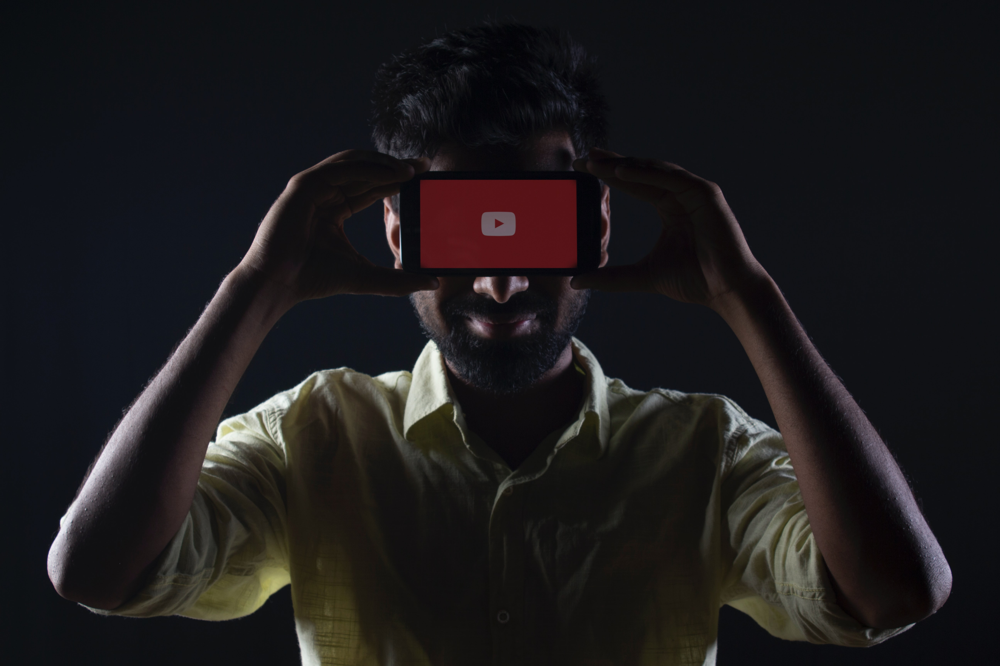

감스트
리그 오브 레전드 입문 이후 위의 단점이 더욱 두드러지기 시작했는데, 입문 때부터 생방송 시청자들이 '싸워라', '킬 각이다', '궁극기를 써라' 등의 훈수가 빗발치자 본인 만의 가불기인 '너희가 방송 켜라'[44], '자기들도 못하면서' 등의 발언을 사용하며 시청자들을 마구 강퇴하거나 블랙리스트에 올렸다. 그런데 이 과정에서 감정적으로 훈수가 아닌 일반적인 드립성 채팅에도 날선 반응을 보이며 죄 없는 시청자들을 제재하고 있다. 시청자들도 방송 분위기가 좋기를 원하기 때문에 감스트에게 채팅을 신경 쓰지 말라고 요구하지만, 타 방송 시청자들이 들어올 때마다 똑같이 채팅창 온도가 올라가기 때문에 도로아미타불. 또한 채팅에서도 감스트를 변호하려는 시청자들과 못할 때만 놀리려는 시청자들, 그리고 어떻게든 비난하려는 시청자들[45]이 어우러져 카오스를 이루어내고 있다.